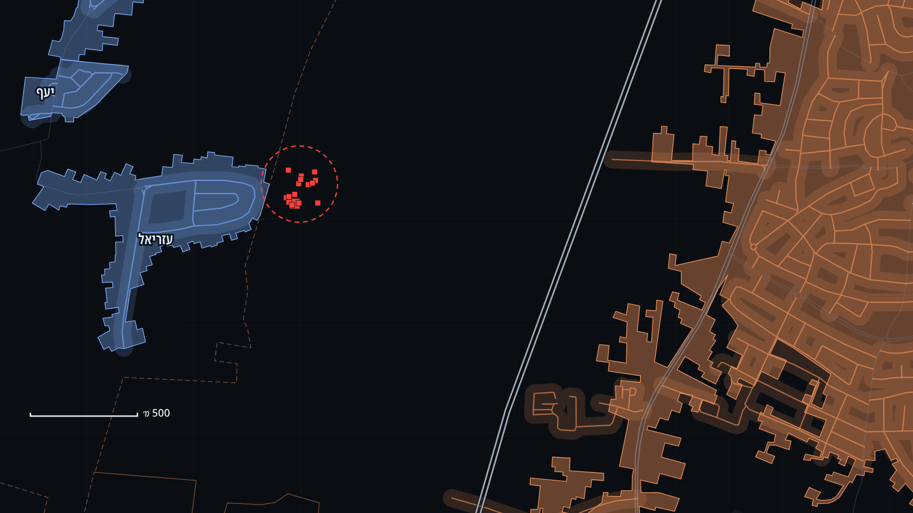

1. תסתכלו על המפה

150 מטר: בין קלנסווה לכפר יעבץ
OpenStreetMap

ליד עזריאל: מ־25 מ״ר ← 17 מתחמי וילות
מעריב
N12 · 11.10.2026

לגוש השינוי יש 48 מנדטים מול רוב של 61. והדרישה של המשותפת כבר פורסמה:
הפסקת הריסות הבתים וביטול הסנקציות של חוק קמיניץ.
2. וזה עבד. נתוני המדינה
1,806
צווי הריסה של הרשות (2024)
+184% מול 2017
11
צווים בלבד בוטלו בבית משפט
מתוך 1,806 · ו־48 פגו, בעיקר בלי ליווי משטרתי
״הקפאת אכיפה של עבירות בנייה תסכל תכנון דירות בחברה הערבית.״
ארז קמיניץ, בכלכליסט · ולפי מבקר המדינה, ב־4 רשויות בצפון נוצלו רק 20% מתקציבי התכנון.
3. זרוע א׳: אכיפה מוקדמת
1
איתור מהיר מהאוויר
התרעה מיידית על כל שלד חדש מחוץ לקו הכחול, לפני אכלוס.
2
גיבוי מול ועדות שלא אוכפות
אם ועדה מקומית לא פועלת תוך שבועיים, הרשות הארצית נכנסת.
3
ליווי משטרתי קבוע מראש
סוגרים את הפרצה שגרמה ל־48 צווים לפקוע בלי ביצוע.
4
שקיפות נתונים לציבור
דוח שנתי פתוח לפי יישוב וועדה.
4. זרוע ב׳: דיור חוקי בתוך היישוב
1
מתחם פיילוט של 4 עד 6 קומות
בנייה מרקמית שמתאימה למשפחה ברשות ערבית שותפה.
2
לפרק את פקק הקרקע המשותפת
להפנות תקציבים שכבר אושרו לצוותי מדידה ושמאות לשחרור היתרים.
3
מענקי תשתיות למי שבונה כחוק
כבישים, ניקוז ומוסדות ציבור לרשויות שמגדילות היתרים ואוכפות.
4
חילופי קרקע הוגנים לתשתיות
החלפת קרקע פרטית הדרושה לכביש או בית ספר מול מגרש מוסדר.
5. סדרי הגודל בארבע שנים
4,420
התחלות בנייה · כל הארץ
קצב 2017 (1,105 × 4)
19,400
מבנים · הנגב בלבד
קצב רגבים (404 × 48 · בנפרד)
ממשלות מתחלפות. מה שנבנה על הקרקע נשאר לתמיד.
לסרט המלא ולמסמכים: hakibush.com/kaminitz
נתוני המדינה ונתוני רגבים נספרים בנפרד; הערכות ל־4 שנים הן חישוב לפי קצבי העבר שבמקורות, לא נתון רשמי.